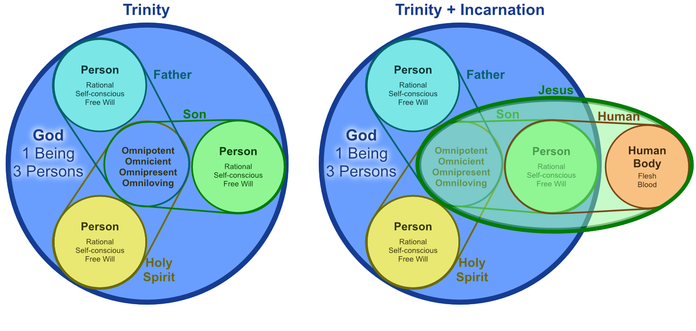

"In the beginning was the Word, and the Word was with God, and the Word was God."
John 1:1 (NKJV)
"For in Him dwells all the fullness of the Godhead bodily;"
Colossians 2:9 (NKJV)
* The Word is God (deity is affirmed, not merely similarity) * The fullness of deity dwells in Christ bodily * Therefore: any Christology must preserve **full deity** --- ## The Son Truly Became Human"And the Word became flesh and dwelt among us, and we beheld His glory, the glory as of the only begotten of the Father, full of grace and truth."
John 1:14 (NKJV)
"By this you know the Spirit of God: Every spirit that confesses that Jesus Christ has come in the flesh is of God, and every spirit that does not confess that Jesus Christ has come in the flesh is not of God. And this is the spirit of the Antichrist, which you have heard was coming, and is now already in the world."
1 John 4:2–3 (NKJV)
* The Word became flesh (real incarnation, not appearance) * Confessing Jesus Christ “has come in the flesh” is a basic Christian test * Therefore: any Christology must preserve **true humanity** --- ## The Biblical Data (Non-Negotiables) * The New Testament affirms both **deity** and **humanity** of Christ * The Son is truly God (e.g., John 1:1; Colossians 2:9) * The Son truly became human (e.g., John 1:14; 1 John 4:2–3) * Orthodoxy insists on both without compromise * Deny deity → not Christian theism * Deny humanity → no real incarnation, no real suffering, no real redemption --- ## Human Growth and Learning"And Jesus increased in wisdom and stature, and in favor with God and men."
Luke 2:52 (NKJV)
"though He was a Son, yet He learned obedience by the things which He suffered."
Hebrews 5:8 (NKJV)
* Jesus’ human life includes genuine growth and development * “Learned obedience” implies real human experience (not pretense) --- ## A Limitation Text (Human Consciousness)"But of that day and hour no one knows, not even the angels in heaven, nor the Son, but only the Father."
Mark 13:32 (NKJV)
* The Son is said not to know the day/hour * This gives us a clear example of human limitation to be explained by our model --- ## Tempted Yet Without Sin"For we do not have a High Priest who cannot sympathize with our weaknesses, but was in all points tempted as we are, yet without sin."
Hebrews 4:15 (NKJV)
* Temptation is real, not theatrical * Sinlessness does not negate true humanity --- ## The Temptation Paradox"For we do not have a High Priest who cannot sympathize with our weaknesses, but was in all points tempted as we are, yet without sin."
Hebrews 4:15 (NKJV)
"Let no one say when he is tempted, 'I am tempted by God'; for God cannot be tempted by evil, nor does He Himself tempt anyone."
James 1:13 (NKJV)
* Christ was genuinely tempted (Hebrews 4:15) — yet God cannot be tempted (James 1:13) * This tension requires a model that preserves both truths * Any adequate Christology must explain how temptation is real without implying the possibility of sin --- ## Physical Limitations"Now Jacob's well was there. Jesus therefore, being wearied from His journey, sat thus by the well. It was about the sixth hour."
John 4:6 (NKJV)
"After this, Jesus, knowing that all things were now accomplished, that the Scripture might be fulfilled, said, 'I thirst!'"
John 19:28 (NKJV)
* Jesus experienced genuine physical fatigue and thirst * These are not "performances" but real bodily limitations --- ## Real Suffering and Death"Inasmuch then as the children have partaken of flesh and blood, He Himself likewise shared in the same, that through death He might destroy him who had the power of death, that is, the devil,"
Hebrews 2:14 (NKJV)
* Christ shared in flesh and blood so that he could truly die * His death was real, not apparent, and purposeful: to destroy the power of death --- ## Jesus' True Humanity * Human birth, growth, and development (Luke 2:52) * Temptation and testing (Hebrews 4:15) * Physical limitations: hunger, thirst, fatigue (John 4:6; 19:28) * Genuine human psychology and cognition * Growth and learning (Hebrews 5:8) * Epistemic limits in his earthly consciousness (Mark 13:32) * Real suffering and real death (Hebrews 2:14) --- ## The Tension In One Person"For in Him dwells all the fullness of the Godhead bodily;"
Colossians 2:9 (NKJV)
"But of that day and hour no one knows, not even the angels in heaven, nor the Son, but only the Father."
Mark 13:32 (NKJV)
* Full deity is affirmed * Genuine limitation is also affirmed * Therefore: we must explain these without contradiction or denial --- ## The Apparent Contradiction (Incompatible Predicates) * How can one person be both: * Creator and creature? * Necessary/eternal and yet mortal? * Omniscient and yet “the Son does not know” (Mark 13:32)? * Omnipresent and yet bodily located in Palestine? * The classical confession: **truly God and truly man** * Not successive “stages” (God → man → God) * Simultaneously divine and human --- ## Preview: The Model We're Building Toward  --- # False Models --- ## The Historical Pressure (Errors To Avoid) * **Docetism:** Christ only "seemed" human * No real human life, no real suffering * **Apollinarianism:** unity preserved by truncating Christ's humanity * The Logos replaces the human rational soul/mind * Unity achieved, but at the cost of a complete human nature * **Nestorian tendency:** full deity + full humanity, but unity threatened * Risk: two persons / two Sons * **Alexandrian (one-nature) tendency:** natures blended/confused * **Antiochene (two-nature) tendency:** natures kept, but union weakened --- ## Anti-Docetism (Not "Seeming" Human)"By this you know the Spirit of God: Every spirit that confesses that Jesus Christ has come in the flesh is of God, and every spirit that does not confess that Jesus Christ has come in the flesh is not of God. And this is the spirit of the Antichrist, which you have heard was coming, and is now already in the world."
1 John 4:2–3 (NKJV)
* The apostolic test requires confessing Christ "has come in the flesh" * So any view that denies real humanity is excluded --- ## "What Is Not Assumed Is Not Saved""For indeed He does not give aid to angels, but He does give aid to the seed of Abraham. Therefore, in all things He had to be made like His brethren, that He might be a merciful and faithful High Priest in things pertaining to God, to make propitiation for the sins of the people."
Hebrews 2:16–17 (NKJV)
* Gregory of Nyssa's principle: what Christ did not assume, he did not redeem * If Apollinarianism is true and Christ lacks a human mind, the human mind cannot be saved * Hebrews insists Christ was made like us "in all things" — a complete human nature is necessary for salvation --- ## The Theotokos Controversy"But why is this granted to me, that the mother of my Lord should come to me?"
Luke 1:43 (NKJV)
* Nestorius (428) refused to call Mary *Theotokos* ("God-bearer" / "Mother of God") * He insisted Mary bore only the man Jesus, not the divine Logos * The Council of Ephesus (431) affirmed *Theotokos* * Not to exalt Mary, but to safeguard the unity of Christ's person * If you cannot say "Mary bore God incarnate," you have split Christ into two persons --- ## Why Two Natures (Deity + Humanity)"And the Word became flesh and dwelt among us, and we beheld His glory, the glory as of the only begotten of the Father, full of grace and truth."
John 1:14 (NKJV)
"For in Him dwells all the fullness of the Godhead bodily;"
Colossians 2:9 (NKJV)
* Scripture pushes us to affirm both true humanity and full deity * Chalcedon functions as guardrails to keep both without confusion or division --- ## Chalcedon (451): Boundary Markers (Not An Explanation) * The church’s guardrails: * **One person** (one Son) * **Two complete natures** (truly God and truly man) * “Without confusion, without change, without division, without separation” * What it achieves * Rejects Apollinarianism (complete humanity: “rational soul and body”) * Rejects Nestorianism (no division into two persons) * It doesn’t tell us *how* the incarnation works * It marks out safe waters for further theorizing --- ## Incarnation as Mirror of the Trinity * The **Trinity**: multiple persons sharing one divine nature * The **Incarnation**: multiple natures united in one divine person * This structural parallel illuminates both doctrines * Trinity guards against dividing the Godhead; Incarnation guards against dividing Christ * Both require "without confusion, without separation" thinking --- ## Kenosis (Emptying)"Let this mind be in you which was also in Christ Jesus, who, being in the form of God, did not consider it robbery to be equal with God, but made **Himself of no reputation**, taking the form of a bondservant, and coming in the likeness of men. And being found in appearance as a man, He humbled Himself and became obedient to the point of death, even the death of the cross."
Philippians 2:5–8 (NKJV)
* The Greek *kenoō* ("to empty") is rendered as such in ESV and NASB and as "made Himself of no reputation" in NKJV * The "emptying" is described in terms of humility and servanthood, loss of status and recognition, not loss of essence attributes * The text motivates the question: what kind of "emptying" is compatible with full deity? --- ## Craig: “Two Natures” Means Natural Kinds * “Nature” here is a **kind essence** (natural-kind membership) * Humanity: the properties that make something human * Deity: the properties that constitute divinity * The Logos possesses: * The **divine nature essentially** * A **human nature contingently** (assumed in the virginal conception) * This frames the incarnation as **addition, not subtraction** * The Logos does not cease to be God --- ## Full Deity Remains In The Incarnation"For in Him dwells all the fullness of the Godhead bodily;"
Colossians 2:9 (NKJV)
* Full deity dwells in Christ bodily * This directly pressures radical kenosis (subtraction) models --- ## Against Radical Kenosis (Subtraction) * Radical kenotic views: the Logos divests divine attributes to become human * Craig's objection * If the Logos gives up essential divine attributes, he ceases to be God * God does not “metamorphose” into a man (pagan-style transformation) * Better reading of Philippians 2 “emptying” * A **change of status** (humiliation), not loss of deity --- ## Learning vs “Not Knowing”"though He was a Son, yet He learned obedience by the things which He suffered."
Hebrews 5:8 (NKJV)
"But of that day and hour no one knows, not even the angels in heaven, nor the Son, but only the Father."
Mark 13:32 (NKJV)
* These texts make “according to nature” predication natural * They push us to distinguish divine and human predicates in one person --- ## Key Tool: Reduplicative Predication * Predicates apply to Christ **with respect to** a nature * Divine predicates by divine nature * Human predicates by human nature * Examples * Christ **died** with respect to his human nature * Christ is **omnipresent** with respect to his divine nature * Christ **learned obedience** (Hebrews 5:8) with respect to his human nature * Christ’s “not knowing” (Mark 13:32) belongs to the human consciousness --- ## Deity + Human Growth Together"For in Him dwells all the fullness of the Godhead bodily;"
Colossians 2:9 (NKJV)
"And Jesus increased in wisdom and stature, and in favor with God and men."
Luke 2:52 (NKJV)
* Colossians 2:9 anchors full deity * Luke 2:52 anchors genuine human development * Craig’s model aims to affirm both simultaneously --- ## Craig’s Proposed Model (Three Planks) * (1) Chalcedon: **one person** exemplifying **two complete natures** * (2) A rehabilitated Apollinarian *insight* (handled carefully) * A proposal about how unity of person is secured without splitting into two * Without denying that Christ’s humanity is complete * (3) A **subliminal-divine** account during the state of humiliation * Divine aspects largely “subliminal” * A genuinely human waking consciousness that begins infant-like and grows * Not pretense; a real human life --- ## The Logos as Archetype of Humanity"Then God said, 'Let Us make man in Our image, according to Our likeness [...]' So God created man in His own image; in the image of God He created him; male and female He created them."
Genesis 1:26–27 (NKJV)
* The *Imago Dei*: humans bear God's image in rationality, self-consciousness, and freedom * Craig's insight: the Logos already possesses these capacities archetypally * In the incarnation, the Logos assumes a human nature brought to completeness through union with him * This explains plank 2: one person (not two) because the Logos *is* the rational soul --- ## The Subliminal Self (Iceberg Model) * William James' concept: consciousness has subliminal depths beneath waking awareness * Your conscious and subconscious mind do not make you two persons * Craig's application: during the state of humiliation, the Logos' divine knowledge and power are largely **subliminal** * Like an iceberg — the bulk of divine cognition is submerged beneath Jesus' waking human consciousness * Jesus' human mind develops genuinely — learning, growing, depending on the Father * Occasionally the divine subliminal surfaces (e.g., knowing Nathanael under the fig tree, John 1:48) --- ## Gethsemane: The Model in Action"Father, if it is Your will, take this cup away from Me; nevertheless not My will, but Yours, be done." Then an angel appeared to Him from heaven, strengthening Him. And being in agony, He prayed more earnestly. Then His sweat became like great drops of blood falling down to the ground."
Luke 22:42–44 (NKJV)
* The subliminal model preserves the authenticity of Gethsemane * Real anguish in prayer — not a performance * Genuine moral struggle and submission to the Father's will * Christ's dependence on the Father is moment-by-moment, not theatrical * The incarnation means God knows suffering from the inside --- ## True God and True Man --- ## Humiliation → Exaltation"Let this mind be in you which was also in Christ Jesus, who, being in the form of God, did not consider it robbery to be equal with God, but made Himself of no reputation, taking the form of a bondservant, and coming in the likeness of men. And being found in appearance as a man, He humbled Himself and became obedient to the point of death, even the death of the cross. Therefore God also has highly exalted Him and given Him the name which is above every name, that at the name of Jesus every knee should bow, of those in heaven, and of those on earth, and of those under the earth, and that every tongue should confess that Jesus Christ is Lord, to the glory of God the Father."
Philippians 2:5–11 (NKJV)
* **Humiliation:** conception → burial (servanthood and obedience) * **Exaltation:** resurrection → universal confession of Christ's lordship * "Emptying" is humility/servanthood (status), not loss of deity --- ## The Permanent Incarnation"This same Jesus, who was taken up from you into heaven, will so come in like manner as you saw Him go into heaven."
Acts 1:11 (NKJV)
"For there is one God and one Mediator between God and men, the Man Christ Jesus,"
1 Timothy 2:5 (NKJV)
* The ascension does not reverse the incarnation * Christ retains his human nature eternally — "the Man Christ Jesus" is present tense * The incarnation is not a temporary 33-year episode but a permanent union * God has forever dignified human nature by assuming it --- ## Why The Incarnation Matters"For we do not have a High Priest who cannot sympathize with our weaknesses, but was in all points tempted as we are, yet without sin."
Hebrews 4:15 (NKJV)
"Inasmuch then as the children have partaken of flesh and blood, He Himself likewise shared in the same, that through death He might destroy him who had the power of death, that is, the devil,"
Hebrews 2:14 (NKJV)
* Hebrews 4:15 teaches Christ’s sympathy through genuine humanity * Hebrews 2:14 ties incarnation to redemption (sharing our nature) --- ## Practical Takeaways (Why This Isn't "Abstract") * The incarnation safeguards: * God’s nearness and sympathy in suffering * The meaningfulness of Christ’s death (real death) * The hope of resurrection (transformed humanity) * Christology is not abstract * It structures worship, prayer, and obedience --- ## Navigation * [Return to Christ Overview](Christ.Slides.html) * Prev: [Overview: Who Is Christ?](Christ.Slides.1.OverviewWhoIsChrist.html) * Next: [Christ’s Death: Sacrifice, Propitiation, and Redemption](Christ.Slides.3.DeathSacrificePropitiationRedemption.html) * [Return to Creekside Defenders](../CreeksideDefenders.html) ---